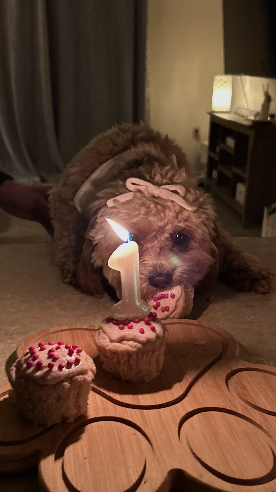

Because some days deserve a little something extra.

Not every memorable day has to be a holiday. Sometimes the best moments are anniversaries, birthdays, graduation celebrations, or simply taking a Saturday to spend quality time together. Wisconsin offers countless beautiful places to celebrate life's little milestones.
Whether you're planning a romantic picnic, taking family photos, or simply looking for somewhere special to spend the afternoon, these destinations are worth remembering.
Pack your favorite snacks, bring a cozy blanket, and find a quiet lakeside park to enjoy an unhurried afternoon together. Sometimes the simplest celebrations are the most meaningful.
Every season offers beautiful backdrops for family photos. State parks, sunflower fields, tree-lined trails, and lakeshores all create memorable places to capture time together.
Not every adventure needs a reason. Some of our favorite memories have come from spontaneous weekend outings, trying somewhere new, or simply enjoying beautiful weather with the people—and pups—we love most.
Looking for even more ideas for memorable Wisconsin adventures? Visit Travel Wisconsin to discover destinations, events, and weekend getaway inspiration.